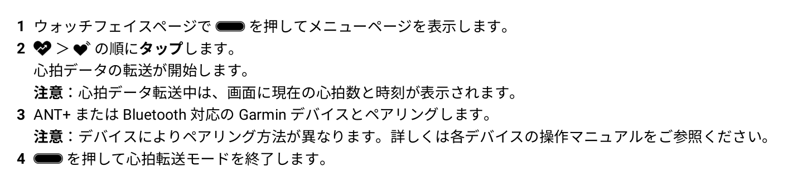

Garmin vívosmart 5 を買っちまった（心臓リハビリ＠がんばらない 2）

いや，以前買った Fitbit が駄目になったわけじゃないのよ。 Fitbit のエコシステムの中で活動するなら，それはそれで必要十分だと思うし1。 でも，やっぱり先日買ったサイクルコンピュータで心拍数をモニタしたかったのよ。 そうすればアクティビティとして記録を取れるし。
心拍数をモニタできてサイクルコンピュータと Bluetooth SMART または ANT+ で連携できるセンサは色々ある。
でも，いくら正確に測れるつっても
というわけで，手首に巻くスマートバンド（活動量計）を買い換えることにした。

- GARMIN(ガーミン) vívosmart 5 Black S/M バンド型スマートウォッチ 心拍計【日本正規品】
- ガーミン(GARMIN) (Release 2022-04-21)
- エレクトロニクス
- B09XGYX7JF (ASIN), 0753759301590 (EAN), 753759301590 (UPC)
- 評価
サイクルコンピュータと Bluetooth または ANT+ で連携可能なスマートバンド（活動量計）として購入。 Garmin 製なのに自前では GPS 機能がない（スマホの GPS 機能と組み合わせて使う）。活動量計としての機能は十分というかありすぎる（笑）
嗚呼，ついに Garmin 製品に手を出すことになるとは。 でもいっちゃん安いやつね。 というわけで，到着。
初期化にはスマホアプリ “Garmin Connect Mobile” が必要。 最近は何でもスマホがないと動かないんだねぇ。 便利だけど不便。
で，アプリを入れただけでは駄目で Garmin Connect サービスにサインアップが必要。 アプリをサインアップしてようやく Garmin デバイスとペアリングできた。 これが分からなくてしばらく悩んだんだよ。 ちゃんとマニュアルに書いとけっての！
ひとしきり弄り倒したあと，いよいよサイクルコンピュータに繋いでみる。 どうやら自動で接続できるわけではなく， Garmin デバイスを操作して「心拍転送モード」にしないといけないらしい。

「心拍転送モード」の間だけペアリングした機器に心拍データを送ってくれる。 ANT+ はごく近傍しか電波が届かないとはいえ，四六時中そこらにデータを撒き散らすわけにはいかないもんな。
実際に「心拍転送モード」にしてサイクルコンピュータに繋いで自転車に乗ってみたが，いい感じにデータが取れた。 うんうん。 これならよかろう。 ただ「心拍転送モード」にすると Garmin デバイスのバッテリ消費が激しいみたい。 この辺はもう少し検証が必要か。
フィットネスバイクでもサイクルコンピュータを使ってケイデンスと心拍データを「記録」することができるようになった。 Garmin デバイス側でもフィットネスバイクを漕いでる間の心拍データ等は取れるのだが，何故かウォーキングとして記録されるんだよなぁ。 まぁ，ええけど。
なんだかんだと散財してるなぁ。 そうでなくとも今月は現金が要るのに。 しばらく大人しくしていよう。
今日のお言葉
垂直統合すればベンダーロックインのリスクがある。 分離分散させればサプライチェーンのリスクがある。
参考

- trimm ROLLIN サイクルコンピュータ GPS 自転車 速度計 ワイヤレス ナビゲーション ANT+センサー対応 Bluetooth 心拍数 高度計 2.7インチ スピードセンサー(device only)
- Trimm
- B0BLNFPWTQ (ASIN), 8809748020286 (EAN)
- 評価
韓国企業だけどモノは made in Chaina って書いてあった。ナビ機能付きで2万円以下というのは安い。スマホアプリと連携させて操作する。モノクロ液晶だがバッテリ消費は少なめ。各種センサーやスマートウォッチと連携可能。
-
Fitbit のデバイスは Bluetooth で心拍データを外部システムに出力する仕組みがないそうな。もちろん ANT+ にも対応してないためサイクルコンピュータと連携できない。 ↩︎